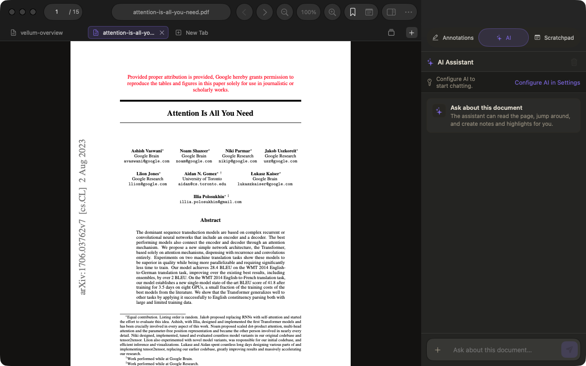
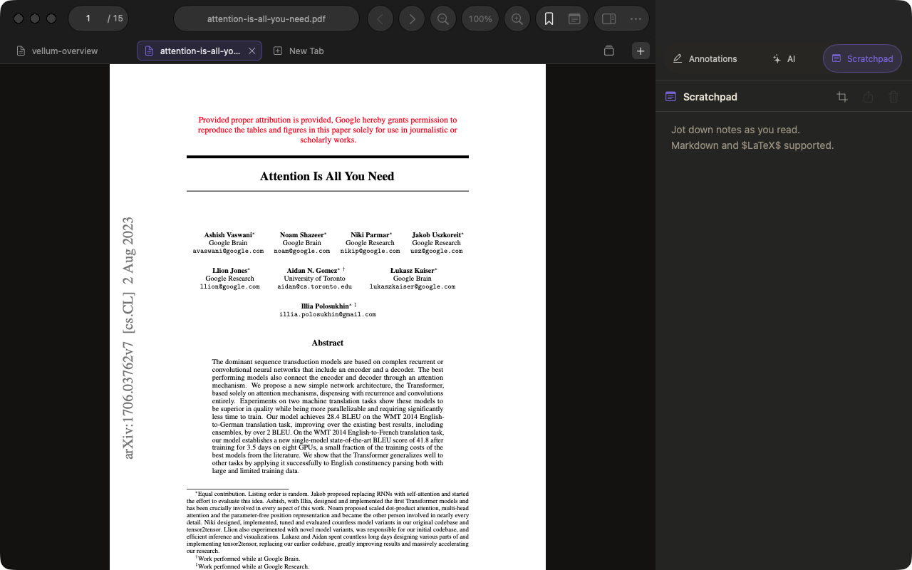

Your reading library, without the browser tab pile.
One reading workspace
The page, the context, and your thinking stay together.
Vellum gives PDFs and web pages the same reading tools, so your workflow
does not change when the format does.

Read and understand
Go beyond the page you can see.
Read PDFs, articles, and blogs in tabs or split panes. Search the full
document, keep your place, and use an AI model you choose when a dense
section needs another pass.
Full-document search and page navigation
Optional document-aware AI with source context
AI-created highlights and notes you can inspect
Multiple documents open side by side

Mark and remember
Your notes live beside what inspired them.
Highlight passages, add sticky notes, bookmark a position, or build a
longer set of ideas in the Scratchpad. Every document gets its own
Markdown notebook with LaTeX and image support.
Highlights and notes across PDFs and webpages
Portable PDF annotations
Per-document Scratchpad with Markdown and LaTeX
Region snapshots and image attachments
01
Save the web
Keep offline copies of articles and blogs for distraction-free reading.
02
Find anything again
Search titles, filenames, and web addresses from one library.
03
Bring your reading list
Open saved reads from Readwise Reader and Raindrop inside Vellum.
04
Pick up where you left off
Resume recent reading with your last position and document context intact.
Available now
Built for long reads on Mac.
Download the full Vellum reading workspace today. iPhone and iPad versions
are coming next.